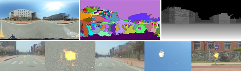
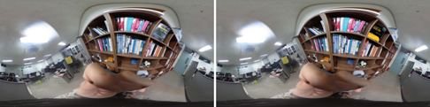
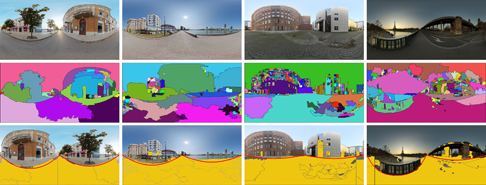
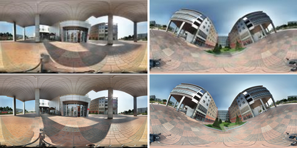
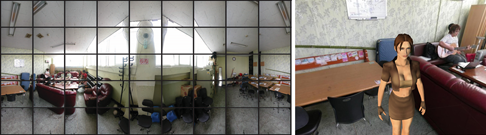

Creation of Outdoor Spherical Depth Map for FPS Game Background
구면 파노라마 영상을 고정 시점 FPS게임 배경으로 사용하는 방법을 제시한다. 구면 파노라마 영상은 전 방향의 모든 정보를 담고 있다. 한 장 만으로도 구 형태의 게임 배경을 생성할 수 있으므로 배경 제작에 사용되는 시간을 줄일 수 있다. 본 연구에서는 소실점을 검출하여 대략적인 깊이지도를 생성하고, 영상 분할 기법을 활용하여 건축물과 가로수 등의 지형지물을 판단한다. 이 결과를 통하여 플레이어의 발사체가 이동할 수 있는 한계 거리를 정하는 방식으로 배경과 유기적인 게임을 만들 수 있다.

Planar Texture Replacement in Spherical Images using Cubemap
구면 파노라마 영상에서는 심한 구면 왜곡으로 인하여 기존의 평면 패턴의 탐색 방법인 SURF가 올바르게 작동되지 않는다. 평면 패턴은 구면 영상에서 왜곡되어 나타나므로 구면 파노라마 영상에서의 패턴 탐색 및 다른 텍스처로의 대치는 평면 영상의 경우와 다르게 처리되어야 한다. 본 연구에서는 구면 파노라마 영상을 큐브맵 영상으로 변환하고 구면 왜곡이 제거된 평면 영상에서 SURF를 사용하여 패턴을 탐색하고 해당 평면 텍스처를 대치한 후 다시 구면 파노라마 영상으로 변환하는 구면 파노라마 영상에서의 평면 대치 방법을 제안한다.

A Ground Detection Technique based on Region Segmentation in Spherical Image
구면 영상에서 영역 분할 정보를 사용하여 바닥 영역을 검출하는 방법을 제시한다. 평면 영상에서의 Watershed 영역 분할 방법을 수정하여 구면 영상의 영역 분할에 적용할 수 있도록 하였다. 영역들을 분할한 뒤 가정된 바닥 영역 픽셀의 색상과 질감을 그 외의 영역들과 비교하여 바닥 영역을 검출한다. 구면 파노라마 영상에서는 구면 왜곡으로 인하여 평면에서의 바닥 검출 방법을 그대로 적용할 수 없다. 구면 왜곡을 고려한 바닥 영역 검출을 위하여 바닥 영역의 외곽선을 검출하는 알고리즘을 설계하였다.

Exemplar-Based Image Inpainting for Spherical Panoramic Image
평면 대 평면 간 기하 변환에 기반을 두는 기존 영상처리 기술들은 구면 파노라마 영상에서의 픽셀 좌표에는 적용될 수 없다. 본 연구에서는 평면 영상을 전제로 개발된 표본 기반 영상 인페인팅 기술을 구면 파노라마 영상에 적용할 수 있는 방법을 제안한다. 구면 영상에서 위도에 따라 다른 표본을 추출하는 방법을 이용하여 평면 영상에서의 표본 기반 인페인팅을 구면 파노라마 영상에서도 동일하게 사용할 수 있도록 하는 것이 본 논문에서 제안하는 방법의 목적이다. 기존의 표본 기반 영상 인페인팅은 정사각형 표본을 그대로 사용하기 때문에 좌표계가 다른 구면 파노라마 영상에서는 사용할 수 없다. 구면 파노라마 영상의 위도에 따른 각기 다른 모양의 표본을 취득한 후 이를 정사각형으로 균일화하는 방법을 사용한다. 이후 균일화된 표본을 이용하여 표본 기반 영상 인페인팅을 수행하는 방법으로 영상을 복원한다.

Creating Full View Panorama Image for Skybox and Rendering
복잡한 실제 환경을 구현하기 위해 3차원 객체를 대신하여 실사 영상으로부터 얻은 영상을 사용한다. 파노라마 영상은 좌우 360도까지의 시야각을 확보할 수 있어서 유용하다. 본 연구에서는 게임 세계의 배경으로 사용되기 위한 파노라마 영상 생성 기법을 소개한다. 생성된 파노라마 영상으로부터 3차원 공간 내에 매핑 시키기 위한 큐브 맵 영상으로의 변환 기법 또한 소개한다. 큐브 맵 영상을 통해 생성된 게임 세계의 배경에서 고정된 시점을 극복하기 위해 다중 큐브 맵 영상과 보간을 통한 중간 영상의 생성을 제시한다. 실제 환경을 가상화할 시에 파노라마 배경을 사용하면 조밀한 배경을 3차원적으로 모델링하지 않고도 배경을 3차원적으로 표현할 수 있으므로 제안된 기법은 가상현실 응용에 유용하게 사용될 수 있다.

Entertainment Computing Laboratory